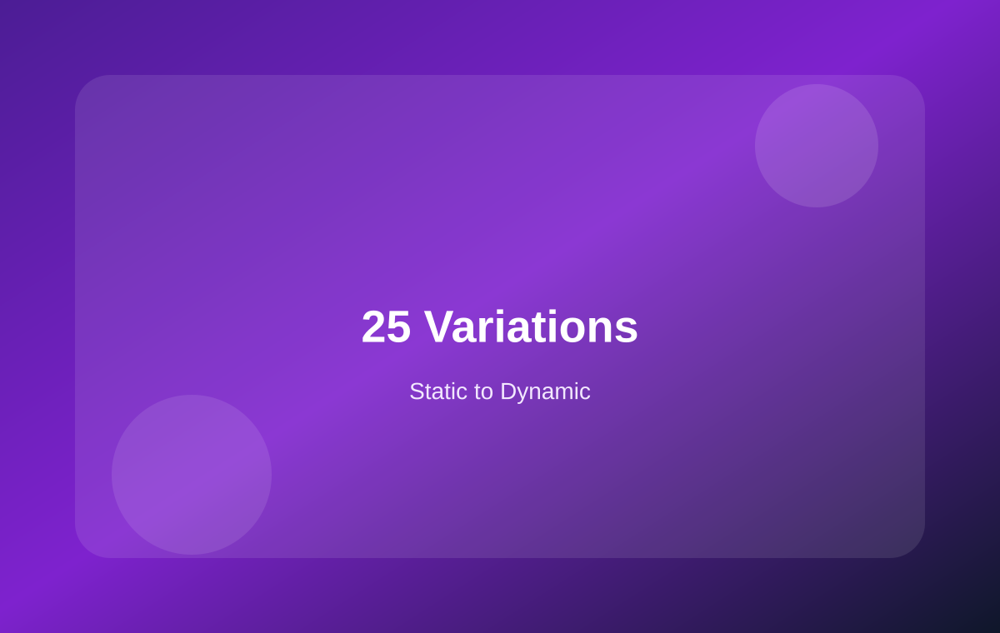

25 变体数据动态化：从 data-* 到 Variation Data
更详细地整理规格选项页面如何从静态 data-* 模拟数据，逐步接入 WooCommerce 可变产品数据。

本页学习重点
你现在的静态变体模型
<button
data-variation-option
data-image="assets/product-02.svg"
data-name="Walnut Decking"
data-price="$42.00"
data-sku="DECK-WALNUT-220"
data-description="Darker premium tone...">
Walnut
</button>
这套结构非常适合学习，因为它把变体图片、价格、SKU、描述都清楚地拆开了。
WooCommerce 可变产品动态化会遇到什么
后台数据
- 产品类型：Variable product
- 属性：Color、Length、Size
- 变体：Teak / Walnut / Grey
- 每个变体有价格、SKU、库存、图片
前台交互
- 选择属性
- 匹配一个具体 variation
- 更新价格和库存
- 更新主图和 SKU
- 允许加入购物车
静态 data-* 和 variation data 对应关系
| 静态字段 | 动态字段 | 页面表现 |
|---|---|---|
data-image | variation image | 切换左侧主图和缩略图 |
data-price | price html | 更新当前显示价格 |
data-sku | variation sku | 更新 SKU 信息 |
data-description | variation description | 更新选中颜色的说明 |
| In stock / Low stock | availability html | 显示库存状态 |
推荐接入顺序
先使用 WooCommerce 默认变体表单确认后台可变产品、属性、变体、价格和库存都配置正确。
观察默认变体切换行为选择颜色后，默认页面如何更新价格、库存、图片。
再把你的品牌 UI 接入 variation data不要先完全重写逻辑，先监听默认变体变化，再同步更新你的 UI。
最后优化体验比如色块、库存 badge、缩略图联动、禁用缺货变体。
本页总结
你的静态规格页面已经具备变体联动的结构。真正动态化时，就是把 data-* 模拟数据替换为 WooCommerce variation data。